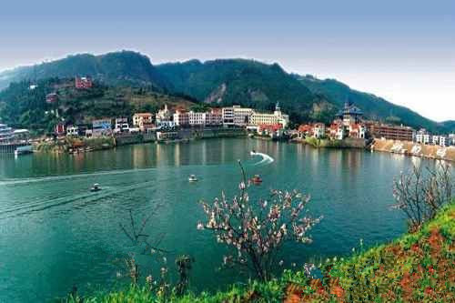

国家城乡融合发展试验区
位于长江上游北岸、重庆西部，因三河汇碧形 如篆文“永”字、山型如“川”字而得名，东距重 庆中心城区55公里，西离成都276公里，是成渝地 区双城经济圈枢纽节点、重庆主城都市区战略支点 公元776年置县，1992年建市，2006年成区。全 面积1576平方公里，辖7个街道、16个镇，常住口 114.9万人，中心城区面积82.8平方公里、人口80万 人，城镇化率71.14％。是国家高新区、国家新型工 业化产业示范基地、国家城乡融合发展试验区，国 家《成渝地区双城经济圈建设规划纲要》明确的现 代制造业基地、西部职教基地和川南渝西融合发展 试验区。永川
| 重庆石笋山景区位于永川区何埂镇柏林村石笋山。石笋山属云雾山系，位于重庆永川区东南何埂镇柏林境内，距永川市区36公里。山中有男石笋山和女石笋山，分别为两座最高山峰，海拔约700米。石笋山雄奇险峻，山峦叠嶂，起伏边绵；石笋山峰青岭翠，绿树成荫，苍松翠柏，古朴苍劲。寂静的山谷白云缭绕，雾霭袅袅；山间紫烟笼罩，缥缥缈缈 | |
| 重庆野生动物世界所在地永川双竹镇是经国务院批准的100余个经济开发试点镇之一，界于东经105.37°——106.05°，北纬28.56°——29.35°之间，该地区山清水秀，地貌环境丰富多样，四季气候温和（年均气温17.8℃），是非常适合野生动物生长繁衍的地区 | |
|  | 卫星湖旅游景区是国家AAA级旅游景区，位于重庆永川市双竹镇，距重庆主城区63公里，距永川城区10公里。与国家森林公园茶山竹海、国家级AAAA级景区重庆野生动物世界、松溉古镇处于同一黄金旅游线上，是渝西主要旅游景区和重庆――川南、滇东北、黔西北交通要道上的重要景区。以著名的卫星湖为中心以及周边景观区域组成卫星湖旅游景区 |